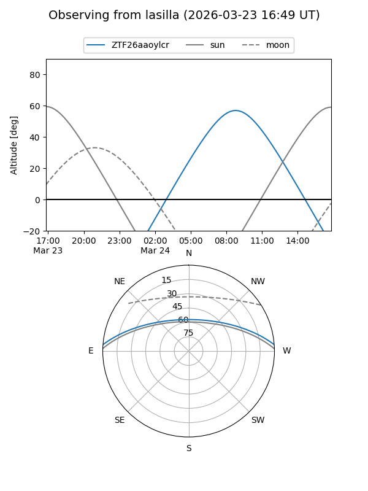
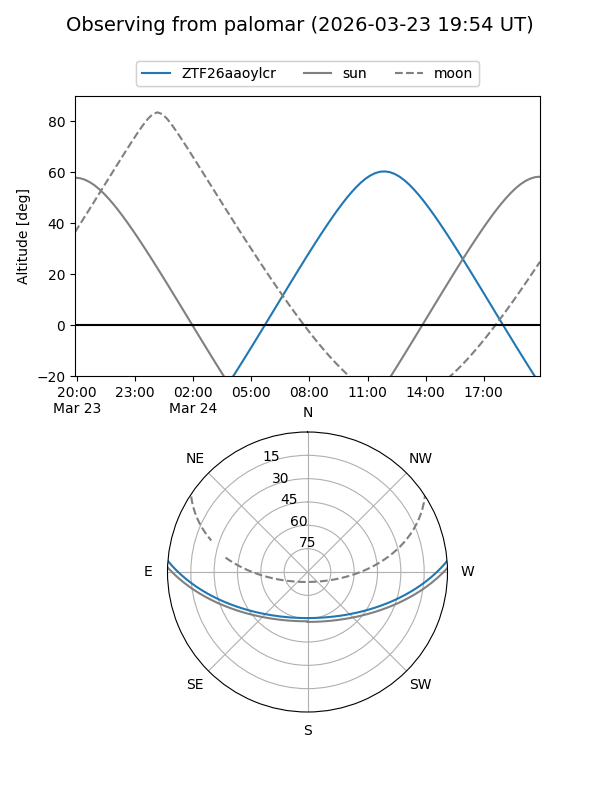

ZTF26aaoylcr
Target ZTF26aaoylcr at 2026-03-23 12:19
Aliases and brokers:
FINK: link
Lasair: link
ALeRCE: link
alt names
ZTF26aaoylcr (ztf,fink_ztf)
Coordinates:
equatorial (ra, dec) = 242.5017,+3.81238
equatorial (HMS+DMS) = 16:10:00.41,+03:48:44.58
galactic (l, b) = (15.7260,+37.25489)
Flags:
Photometry:
last ztfg=15.31
1 ztfg detections
Lightcurve
Visibility


Additional plots